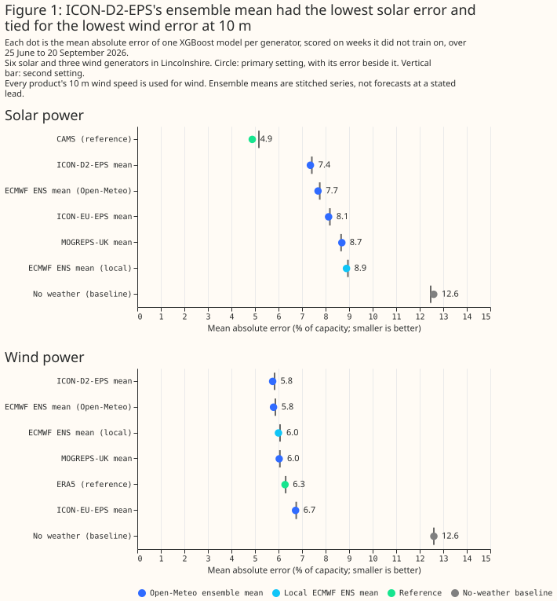

How do Open-Meteo's ensemble-mean products compare for solar and wind power?
This study uses only Flexpectation's own data, and its purpose is to inform Flexpectation's choices. The study scores each weather product only at the generators in Flexpectation's trial area in Lincolnshire. The study does not compare results across many regions or climates, so a result on this page may not hold elsewhere.
At 6 solar farms and 3 wind farms in Lincolnshire, over 88 days from 25 June to 20 September 2026, an XGBoost model given ICON-D2-EPS's ensemble mean had the lowest solar power error of the four ensemble-mean products that Open-Meteo serves, and tied for the lowest wind power error at 10 m. The other three products are the ensemble means of MOGREPS-UK, ICON-EU-EPS, and ECMWF IFS ENS at 0.25 degrees. Every error on this page is a mean absolute error as a percentage of each generator's effective capacity. For solar power, ICON-D2-EPS's mean gave 7.4%, against 7.7% for ECMWF ENS's mean, 8.1% for ICON-EU-EPS's mean, and 8.7% for MOGREPS-UK's mean. An XGBoost model given the satellite retrieval CAMS gave 4.9%, and a model given no weather at all gave 12.6%. For wind power with every product's 10 m wind speed, ICON-D2-EPS's mean gave 5.75% and ECMWF ENS's mean 5.79%, a gap of 0.04 points that this page treats as a tie. The ERA5 reanalysis gave 6.28%, ICON-EU-EPS's mean 6.72%, and no weather 12.60%.
The comparison is descriptive. The window is one summer, the scoring uses 12 held-out weeks, and the page states no interval and no significance test. Each figure is the mean over the same generator-hours for every product, from an XGBoost model per generator, at the setting named in the text.
The products' leads are not matched, and the page does not measure them. Each ensemble mean is a stitched series, so each hour comes from a run of unknown age. ICON-D2-EPS starts a new run every 3 hours and ECMWF IFS ENS less often, so ICON-D2-EPS's hours probably come from shorter leads. Equal leads would probably narrow ICON-D2-EPS's advantage, and the size of the narrowing is not known.

How this page was made. The research question came from a human. Everything else — the code behind every result, the analysis, the figures, and the text — was written by Claude, Anthropic's AI model (for this page, Claude Sonnet 5). A Claude Sonnet review of each script and a Claude Sonnet review of the pull request have run. No Opus scientific-validity review has run, and no human has reviewed the page.
What to use
For a solar model that reads an ensemble mean, read ICON-D2-EPS's where ICON-D2 covers the generator, and ECMWF ENS's elsewhere. ICON-D2-EPS's mean scored 0.3 points better than ECMWF ENS's mean, in both hyperparameter settings. ICON-D2 does not cover South West England or South Wales, and this page cannot say how ICON-D2-EPS would score there, because every generator here is inside its domain. All four Open-Meteo ensemble means scored 2.3 to 3.8 points worse than CAMS across both settings, and 3.8 to 5.2 points better than no weather at all. CAMS is a satellite retrieval available only after the hour, so it sets the target that a forecast of past sunshine could reach and is not a competing forecast.
For a wind model, the evidence favours ICON-D2-EPS's mean given its 100 m and 10 m speeds, with
two
caveats that stop this page recommending it without reservation. Given those speeds, ICON-D2-EPS's
mean scored 5.08%, against 5.71% for ECMWF ENS's mean and 6.11% for ERA5, and it beat ERA5 in all 12
held-out weeks. The first caveat is the unmatched leads described above, which probably favour
ICON-D2-EPS. The second is that Open-Meteo's 100 m wind for ICON-D2's deterministic forecast is the
120 m speed multiplied by 0.98, as the past-wind study found, and this
study has not checked whether the ensemble mean's 100 m wind is built the same way. The 5.08% is
therefore a score for a 100 m speed of unchecked origin. Open-Meteo serves no 100 m wind for
MOGREPS-UK's or ICON-EU-EPS's mean (the README.md in each product's folder lists the field as all
null, which the script also checks), so neither could be scored at hub height. At 10 m,
ICON-EU-EPS's mean scored 0.45 points worse than ERA5 in both settings, and does not
suit a wind model.
These verdicts would change with a longer window or a lead-resolved comparison. The window holds one summer, and none of its wind is from autumn or winter. The ensemble means are stitched series that carry no run time, so the page says nothing about which product forecasts best at a stated lead such as day-ahead.
Data and methods
The rows are the hours that every product covers, 6,663 solar generator-hours and 5,930 wind generator-hours. Solar rows are the hours with the sun above the horizon. The rows drop multi-day zero runs and metering spikes above 1.5 times capacity, and the solar rows also drop hours where the meter reads exactly zero while ERA5 reports more than 100 W/m². The wind rows drop every hour holding an exactly-zero half-hour. Solar power is the mean of the hour ending at the label and wind power is the mean centred on the label, the conventions of the earlier past-weather studies. Rows with the generator's export limit in force (49 solar rows at one generator) are scored but not trained on.
Each product is one stitched series. For each hour, Open-Meteo returns the mean of the ensemble
members from the newest run that covers the hour, with no run time attached. Leads are therefore
short and mixed. This repository's own ECMWF ENS table gives one more series, labelled "local": the
mean of the 51 members, the newest run for each valid time from the three lead bands with 3-hourly
steps (the script's
LOCAL_ENS_HORIZONS, leads up to 69 hours), radiation held
over its 3-hour step, and wind interpolated linearly between steps. The local series takes its
00:00 UTC valid time from lead 24 of the previous day's run.
Each arm is an XGBoost model per generator given one product's values. Solar arms read five shared columns (solar zenith, solar azimuth, extraterrestrial irradiance, ERA5 air temperature, and hour of day) and one column of the product's global irradiance. Wind arms read hour of day and the product's wind speed at 10 m. The hub-height design reads the 100 m and the 10 m speeds, for the four products that carry a 100 m speed. Wind direction is left out, because Open-Meteo's ensemble mean of a direction is a naive average of member directions, which is wrong near north. Every arm of a design has the same number of columns. The baseline "no weather" has only the shared columns. The models use XGBoost 3.4.1 on the CPU at two fixed settings, with three seeds each, and the tables report the first setting unless they say otherwise.
The folds are leave-one-week-out. The 88 days form 12 blocks of 7 days, the last block holding the 11 final days. Every arm, generator, and setting shares the folds. Because the days beside a scored week stay in the training rows, the scheme measures how well a model interpolates between weather episodes within one summer, not how well it forecasts into a new season.
Results
Each ensemble mean's error in irradiance follows its error in solar power. Against CAMS's irradiance, which averaged 354 W/m² on these rows, ICON-D2-EPS's mean had a mean absolute error of 50 W/m², ECMWF ENS's 54, ICON-EU-EPS's 59, MOGREPS-UK's 71, and the local ECMWF ENS series 86. The power errors have the same order. MOGREPS-UK's mean reads 33 W/m² below CAMS on average.
Wind speed agreement with ERA5 does not follow wind power error. At 10 m, the local ECMWF ENS series differs from ERA5 by 2.4 km/h, ECMWF ENS's mean by 3.0, ICON-EU-EPS's by 3.0, MOGREPS-UK's by 3.8, and ICON-D2-EPS's by 4.1. ICON-D2-EPS's mean has the largest difference and the lowest power error. ERA5 is a 31 km reanalysis and not a measurement, so a large difference from ERA5 does not show that a product is wrong.
| Design and product | First setting (% of capacity) | Second setting (% of capacity) | Held-out weeks beating the reference (first setting) |
|---|---|---|---|
| Solar, CAMS (reference) | 4.89 | 5.16 | not applicable |
| Solar, ICON-D2-EPS mean | 7.36 | 7.42 | 0 of 12 |
| Solar, ECMWF ENS mean (Open-Meteo) | 7.68 | 7.75 | 0 of 12 |
| Solar, ICON-EU-EPS mean | 8.13 | 8.18 | 0 of 12 |
| Solar, MOGREPS-UK mean | 8.69 | 8.66 | 0 of 12 |
| Solar, ECMWF ENS mean (local) | 8.89 | 8.95 | 0 of 12 |
| Solar, no weather | 12.60 | 12.47 | 0 of 12 |
| Wind 10 m, ICON-D2-EPS mean | 5.75 | 5.83 | 10 of 12 |
| Wind 10 m, ECMWF ENS mean (Open-Meteo) | 5.79 | 5.87 | 11 of 12 |
| Wind 10 m, ECMWF ENS mean (local) | 6.00 | 6.07 | 9 of 12 |
| Wind 10 m, MOGREPS-UK mean | 6.03 | 6.06 | 8 of 12 |
| Wind 10 m, ERA5 (reference) | 6.28 | 6.30 | not applicable |
| Wind 10 m, ICON-EU-EPS mean | 6.72 | 6.75 | 3 of 12 |
| Wind 10 m, no weather | 12.60 | 12.60 | 0 of 12 |
| Wind 100 m and 10 m, ICON-D2-EPS mean | 5.08 | 5.04 | 12 of 12 |
| Wind 100 m and 10 m, ECMWF ENS mean (Open-Meteo) | 5.71 | 5.73 | 9 of 12 |
| Wind 100 m and 10 m, ECMWF ENS mean (local) | 6.00 | 5.95 | 8 of 12 |
| Wind 100 m and 10 m, ERA5 (reference) | 6.11 | 6.07 | not applicable |
| Wind 100 m and 10 m, no weather | 12.60 | 12.60 | 0 of 12 |
The two settings give the same order, with one swap. At 10 m for wind, MOGREPS-UK's and the local ECMWF ENS series swap places, and their gap is at most 0.04 points in both settings. The three seeds moved each error by less than 0.04 points, so gaps smaller than that are noise.
The local ECMWF ENS series scores worse than Open-Meteo's ECMWF ENS mean. The gap is 1.2 points for solar, 0.2 for wind at 10 m, and 0.3 for wind at 100 m. The two series come from the same ensemble on different grids and with different stitching and interpolation, so the gap may reflect the pipeline. The next section tests some of the candidate causes.
Why the local ECMWF ENS series scores worse than Open-Meteo's
Holding each 3-hour irradiance value flat over its step accounts for about two-thirds of the solar gap, and the rest is consistent with the local series having older runs. The tests are descriptive: each is one 88-day summer, at the first hyperparameter setting, with no interval. The solar gap is 1.21 points of capacity between the local series (8.89%) and Open-Meteo's ECMWF ENS mean (7.68%). Interpolating the local irradiance through the clearness index (the ratio of irradiance to the irradiance at the top of the atmosphere) gave 8.08%, so the gap fell to 0.40 points. Against CAMS's irradiance, the hourly mean absolute error of the local series fell from 86 to 59 W/m², beside 54 W/m² for Open-Meteo's mean. Averaged over the local series' own 3-hour windows, where the hold cannot matter, the local series' error is 53 W/m² against 49 W/m² for Open-Meteo's mean. The hold therefore accounts for most of the hourly gap in irradiance error (27 W/m²), and 4 W/m² remains at 3-hour resolution. The interpolation does not conserve the 3-hour means: the interpolated series departs from the held one by 6 to 11 W/m² on average over the windows of each step, and by 1 to 7 W/m² on signed average. Open-Meteo's own method of spreading 3-hour steps onto hours is not documented in the sources this study read, so the interpolation is one plausible method and not a copy of Open-Meteo's.
| Design | Open-Meteo ECMWF ENS mean | Local, held over each step | Local, clearness index interpolated | Local, from a run about a day older |
|---|---|---|---|---|
| Solar | 7.68 | 8.89 | 8.08 | 9.74 |
| Wind 10 m | 5.79 | 6.00 | not built | 6.89 |
| Wind 100 m and 10 m | 5.71 | 6.00 | not built | 6.82 |
A run about a day older raised the local error by 0.8 to 0.9 points in every design, which bounds what a difference in run age can explain. The local series comes from one 00:00 UTC run a day, so its leads run from 3 to 24 hours (mean 14 hours). The day-old series takes the newest run at least 27 hours ahead, so its leads run from 27 to 48 hours (mean 38 hours), and the script checks that every step inside the scored window has a run exactly 24 hours older than the stored series' run. The rise per hour of run age is therefore about 0.04 points, measured on the held series and assumed to carry over to the interpolated series. The figure also assumes that the error grows in a straight line with run age, which the study did not test. Open-Meteo's ECMWF ENS product starts a run every 6 hours (the Ensemble API page), and the Historical Forecast API page says each run's first few hours are stitched into one series. If the ensemble-mean archive follows the same rule, Open-Meteo's leads are about 0 to 6 hours, and a lead 8 to 11 hours shorter than the local series' would account for 0.3 to 0.4 points, which is the solar gap left after the interpolation. The page does not verify either assumption, because the ensemble-mean series carries no run time.
The gap between the two series changes with the hour of the day in a way that fits a lead effect for wind and an irradiance effect for solar. For wind at 10 m, the local series scored better than Open-Meteo's mean in the two steps with the shortest local leads (0.28 and 0.08 points better at steps ending 03:00 and 06:00 UTC, with mean leads of 4 and 7 hours) and worse in the six other steps, by 0.17 to 0.57 points. Hub-height wind shows the same pattern. The hourly labels of the 03:00 step lie between two runs, because linear interpolation joins the last step of the previous day's run to the first of the new run. For solar, the gap is largest at midday, where the irradiance is largest, and not at the longest lead.
| Step ending (UTC) | Mean local lead (hours) | Solar: local minus Open-Meteo, held | Solar: local minus Open-Meteo, interpolated | Wind 10 m: local minus Open-Meteo |
|---|---|---|---|---|
| 03:00 | 3.7 | no sunlit hours | no sunlit hours | -0.28 |
| 06:00 | 6.7 | -0.04 | 0.01 | -0.08 |
| 09:00 | 9.7 | 1.19 | 0.23 | 0.30 |
| 12:00 | 12.7 | 1.94 | 0.64 | 0.17 |
| 15:00 | 15.7 | 1.70 | 0.71 | 0.39 |
| 18:00 | 18.7 | 0.84 | 0.32 | 0.57 |
| 21:00 | 21.7 | -0.06 | -0.09 | 0.18 |
| 00:00 | 24.2 | no sunlit hours | no sunlit hours | 0.39 |
The study did not test the grid or the member count, so a share of the remaining gap has no tested cause. The local table averages the 0.25 degree grid points that overlap each H3 resolution-5 hexagon (weighted by overlap area), and derives wind speed from the averaged east and north components. Open-Meteo's source code and documentation, as read for this study, do not say how its 0.25 degree product picks a grid point for a location. The local mean is over 51 members, and the study did not count the members behind Open-Meteo's ECMWF ENS mean.
Whether ICON-D2-EPS's lead comes from updating more often
ICON-D2's advantage over ECMWF is a short-lead advantage, but the data cannot show how much of ICON-D2-EPS's 0.3-point solar lead over ECMWF ENS comes from its more frequent runs. Open-Meteo starts an ICON-D2-EPS run every 3 hours and an ECMWF ENS run every 6 hours, so under the first-few-hours rule above, the ICON-D2-EPS mean's leads would average about 1.5 hours and the ECMWF ENS mean's about 3 hours. Both estimates use solar slopes only. At the slope of the ECMWF-based local series (about 0.04 points an hour), 1.5 hours is 0.05 points. The slope of ICON-D2's deterministic run is steeper (2.04 points over 24 hours, or 0.085 points an hour, from the table below), and at that slope 1.5 hours is 0.13 points. Both estimates are smaller than the 0.32-point difference, on assumptions the page could not check. The study did not estimate a wind slope for the ensemble means.
| Deterministic model | Solar, freshest run | Solar, run 24 hours older | Wind 10 m, freshest run | Wind 10 m, run 24 hours older |
|---|---|---|---|---|
| ICON-D2 | 7.85 | 9.89 | 5.97 | 7.39 |
| ECMWF IFS 0.25 degree | 7.93 | 8.89 | 6.01 | 6.77 |
| ICON-EU | 8.29 | 9.35 | 6.56 | 7.81 |
| UKV | 8.77 | 10.54 | 5.94 | 7.68 |
With the freshest run, ICON-D2 led ECMWF IFS by 0.08 points for solar and 0.04 points for wind at 10 m, and with the run 24 hours older, ECMWF IFS led ICON-D2 by 1.0 and 0.6 points. At hub height the same swap holds: ICON-D2 led by 0.56 points with the freshest run and trailed by 0.12 points with the older run. For solar, ICON-D2 has the largest rise: its error rose 2.0 points from the freshest to the older run, against 1.0 for ECMWF IFS, 1.1 for ICON-EU, and 1.8 for UKV. For wind at 10 m, ICON-D2 is not the most sensitive (rises of 1.42 points for ICON-D2, 0.76 for ECMWF IFS, 1.25 for ICON-EU, and 1.74 for UKV). A run-age difference between the products would therefore favour ICON-D2-EPS for solar, and the wind data do not show that it would for wind. The deterministic gap at the freshest run (0.08 points) is smaller than the ensemble-mean gap (0.32 points), which leaves a difference that the ensemble averaging of ICON-D2-EPS's 20 members could produce, and this study did not test that explanation. The four deterministic series are single runs, so their errors differ from those of the ensemble means for reasons besides run age.
The ECMWF ENS, ICON-D2-EPS, and MOGREPS-UK means sit much closer to their deterministic models' freshest runs than to the runs 24 hours older, and the ICON-EU-EPS mean sits much closer for irradiance but only slightly closer for 10 m wind. Together the distances point to short leads, and they are not a clean reading of run age. For ICON-EU-EPS, the 10 m wind speed is 2.27 km/h from the freshest run and 2.89 km/h from the older run. The mean absolute distance of ECMWF ENS's mean from the IFS freshest run was 0.87 km/h for 10 m wind speed, against 1.74 km/h from the older run. For the local series the distances were 1.91 and 1.94 km/h. For irradiance the local series is 67 W/m² from the IFS freshest run, because of the hold. The comparison mixes a mean of members with a single member and, for the local series, leads of 3 to 24 hours, which straddle the older run's 24-hour offset. Open-Meteo's leads therefore look shorter than the local series', and the distances do not put a number on them.
What Open-Meteo's source code does for the MOGREPS-UK mean
In the Open-Meteo source code read for this study, the MOGREPS-UK ensemble mean is an unweighted
mean over the 3 members of one hourly run, and no code combines members of different runs. The
Met Office's 18-member MOGREPS-UK ensemble is six hourly runs of 3 members lagged together
(Porson et al. (2020)). The evidence below is from the
open-meteo/open-meteo repository at commit cc3f4e5e956b39a56ab182faeccfd3d936ae6b4c (committed
on 2026-09-23), read from a shallow clone.
Sources/App/UKMO/UkmoDomain.swiftgivesuk_ensemble_2km3 members (countEnsembleMember), an hourly update interval, and a run delay of about 4 hours.Sources/App/UKMO/UkmoDownloader.swiftdownloads one run at a time and, for each forecast step of that run, writes each member of the run's file into a step writer that carries an ensemble-mean calculator.Sources/App/Helper/OmSpatialTimestepWriter.swiftcreates oneEnsembleMeanCalculatorper run and forecast step, so a calculator never receives another run's members.Sources/App/Helper/OmWriter/EnsembleMeanCalculator.swiftkeeps a running mean and a sample standard deviation (divisor n - 1) with equal weight for every member it receives.Sources/App/Helper/OmFileSplitter.swift(updateFromTimeOrientedStreaming3D) merges each new run into the stored series by overwriting every stored value with the new run's value wherever the new value is not NaN, so each valid time keeps the newest run written for it.Sources/App/Controllers/ForecastapiController.swiftservesukmo_uk_ensemble_mean_2kmfrom the single domainuk_ensemble_mean_2km, with no mixing across domains.- A case-insensitive, word-bounded search of every
.swiftfile inSourcesfor "lag", "lagged", "time-lag", and "timelag" found no match, so words such as "flag" did not count.
These points are not verified. The page did not call the API, so it did not check that served values equal a 3-member mean. The code was read as of 2026-09-23 and the archive covers 2026-06-25 onwards, so earlier releases of the code may have behaved differently. The page did not read the NetCDF files Open-Meteo downloads from the Met Office, so it did not check that each file holds only 3 members. The finding does not show what Open-Meteo intends. It shows that the source code has no weighting or lagging.
A 3-member mean is a smaller ensemble than the MOGREPS-UK product name suggests, and it can be noisier than a mean over 18 lagged members. The MOGREPS-UK mean scored 8.69% for solar, behind every other ensemble mean here except the local ECMWF ENS series, and 0.08 points better than UKV's freshest deterministic run (8.77%). The result is consistent with a mean of 3 members adding little to a single run, but it does not show that, because the products differ in more than member count. The roadmap records why members of lagged runs need weights and run ages.
The Met Office's calibrated IMPROVER blend of MOGREPS-UK holds no raw members, so the blend cannot stand in for MOGREPS-UK members (details).
Limitations
The window is short and holds one summer. The 88 days give 12 held-out weeks. The window does not sample autumn or winter wind, and it samples only summer cloud regimes.
The generators share weather. Among the 6 solar generators, MOGREPS-UK's and ICON-D2-EPS's means serve 5 distinct series, ICON-EU-EPS's 4, and ECMWF ENS's 2, because neighbouring generators fall in one grid cell. Among the 3 wind generators, ECMWF ENS's mean serves 2 distinct series and the other products 3. The effective sample is smaller than the number of generator-hours.
The scoring is interpolation. Training rows include the days on both sides of each scored week. A model scored on a later season would show larger errors.
The ensemble means are stitched series with unmatched leads. They carry no run time, so their leads are short, mixed, and different between products, and the page has not measured them. ICON-D2-EPS probably has the shortest leads, which probably flatters it. The page says nothing about day-ahead skill or about how the error grows with lead.
Products differ in coverage. ICON-D2 does not cover South West England or South Wales, and every generator here lies inside its domain. MOGREPS-UK's and ICON-EU-EPS's means have no 100 m wind, and the origin of ICON-D2-EPS's 100 m wind is unchecked.
The capacity denominator is the latest effective capacity per generator in
data/effective_capacity
when the study ran on 26 September 2026.
Scope
The study does not cover ensemble spread or probabilistic scores, leads beyond the stitched series, other seasons, generators outside Lincolnshire, wind direction, other Open-Meteo ensembles, or the beam and diffuse split of radiation. The study does not test whether any difference is statistically significant at the 5% level.
Data and code availability
The four Open-Meteo ensemble means, CAMS, and ERA5 are public downloads, and the metered power is
private. The Open-Meteo means are in data/studies/weather/OPEN-METEO-ENSEMBLE-MEANS/. The local
ECMWF ENS series is built from data/studies/weather/ENS/, which reads this project's own ENS Delta
table. NGED's power readings are private. Every output carries only the anonymised labels A to F
and W1 to W3. The code is in studies/open_meteo_ensemble_means/ and
packages/studies/, at the commit that adds this page.
Reproducing the figures
uv run python studies/open_meteo_ensemble_means/ensemble_means_mae.py
uv run python studies/open_meteo_ensemble_means/ensemble_means_chart.py
npx svgo@4 --multipass --precision=1 --final-newline docs/studies/assets/ensemble_means_mae.svg
uv run python studies/open_meteo_ensemble_means/local_ens_gap.py
The first command writes the tables and report.md under data/studies/open_meteo_ensemble_means/
and takes about 15 minutes on the CPU. The script refuses to overwrite, so move the existing files
to
a superseded/ subfolder first. --report-only rebuilds the tables from the saved losses. The last
command writes the tables of the two new sections to data/studies/open_meteo_ens_gap/, reads the
saved frames of the first command, and takes about 8 minutes on the CPU.